임상심리사-2급 (2017-03-05 기출문제)
1과목: 심리학개론
1. 망각에 관한 설명으로 틀린 것은?
- 설단현상은 인출의 실패에 대한 사례이다.
- 한 기억요소는 색인 또는 연합이 적을수록 간섭도 적어지므로 쉽게 기억된다.
- 일반적으로 일화기억보다 의미기억에 대한 정보의 망각이 적게 일어난다.
- 망각은 유사한 정보 간의 간섭에 기인한 인출단서의 부족에 의해 생긴다.
(정답률: 73%)

2. 엘렉트라 컴플렉스와 연관된 Freud의 심리성적발달 단계는?
- 구강기
- 항문기
- 남근기
- 성기기
(정답률: 91%)
3. 얼마간의 휴식기간을 가진 후에 소거된 반응이 다시 나타나는 현상은?
- 자극 일반화
- 자발적 회복
- 변별 조건형성
- 고차 조건형성
(정답률: 91%)
4. 인본주의 성격이론에 대한 설명으로 옳은 것은?
- 무의식적 욕구나 동기를 강조한다.
- 대표적인 학자는 Bandura와 Watson이다.
- 외부 환경자극에 의해 행동이 결정된다고 본다.
- 개인의 성장 방향과 선택의 자유에 중점을 둔다.
(정답률: 92%)
5. 관계의 내적작동 모델에 관한 설명으로 틀린 것은?
- 관계의 내적작동 모델은 자기와 일차양육자, 그리고 그들 사이의 관계에 대한 한 세트의 믿음들이다.
- 상이한 애착유형의 영아는 상이한 관계의 작동 모델을 갖는 것으로 보인다.
- 상이한 아동은 상이한 기질 혹은 정서적 반응성의 특징적 양식을 가지고 태어난다.
- 매우 어린 아동은 두려움, 과민성, 활동성, 긍정적 감정, 그리고 기타 정서적 특성에 대한 성향에서 서로 같다.
(정답률: 83%)
6. 행동주의적 성격이론에 관한 설명으로 틀린 것은?
- 학습원리로 성격을 설명한다.
- 상황적인 변인보다 유전적인 변인을 중시한다.
- Skinner는 어떤 상황에서 비롯되는 행동과 그 결과를 강조한다.
- 모든 행동을 자극과 반응이라는 기본단위로 설명한다.
(정답률: 89%)
7. 다음 현상을 가장 잘 설명하는 것은?
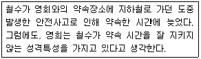
- 절감 원리
- 공변 이론
- 대응추리 이론
- 기본적 귀인오류
(정답률: 85%)
8. 기억에 관한 설명으로 틀린 것은?
- 외현기억은 회상과 재인의 정확도에 의해 측정된다.
- 기술이나 절차에 관한 기억은 암묵기억의 특성이 강하다.
- 일화기억은 의미기억에 비해 더 복잡한 구성을 가지며 많은 단서와 함께 부호화된다.
- 의미기억은 특정 시점이나 맥락과 연합되어 있지 않다.
(정답률: 56%)
9. 성격의 사회-인지적 접근에서 주장하는 바가 아닌 것은?
- 행동은 개인의 성격보다는 그가 처한 상황에 의해 더 많이 영향을 받는다.
- 사람들은 개인의 구성개념이라는 잣대를 통해 세상을 본다.
- 상황이 중요하지만 문화에 따라서는 큰 차이는 없다.
- 통제소재 유형에 따라 목표달성에 대한 기대가 다르다.
(정답률: 88%)
10. 임의의 영점을 가지고 있는 척도는?
- 명목 척도
- 서열 척도
- 등간 척도
- 비율 척도
(정답률: 74%)
11. 언어적 재료에 대한 장기기억의 주된 특징을 나타낸 것은?
- 무한대의 저장능력, 의미적 부호화, 비교적 영속적
- 제한된 저장능력, 의미적 부호화, 빠른 망각
- 미지의 저장능력, 음향적 부호화, 비교적 영속적
- 제한된 저장능력, 감각적 부호화, 빠른 망각
(정답률: 88%)
12. Kohlberg의 도덕발달 단계가 아닌 것은?
- 전인습적 단계
- 인습적 단계
- 후인습적 단계
- 초인습적 단계
(정답률: 89%)
13. 설문조사법과 비교할 때 실험법의 장점은?
- 일반적으로 외적 타당도가 높다.
- 현상을 정확하게 기술할 수 있다.
- 실험대상자를 무선할당하기 어려운 상황에 적용하기 용이하다.
- 변인들 간의 인과 관계를 파악할 수 있다.
(정답률: 71%)
14. 마라톤 경주 중계를 보는 도중 한 선수가 잘못된 방향으로 달리는 것이 눈에 매우 잘 띄었다. 이러한 현상을 가장 잘 설명하는 게슈탈트 원리는?
- 유사성의 원리
- 연속성의 원리
- 근접성의 원리
- 공통운명의 원리
(정답률: 62%)
15. 자극추구 성향에 관한 설명으로 옳은 것은?
- Eysenck는 자극추구 성향에 관한 척도를 제작했다.
- 자극추구 성향이 높을수록 노아에피네프린(NE)이라는 신경전달물질을 통제하는 체계에서의 흥분수준이 낮다는 주장이 있다.
- 성격특성이 일부 신체적으로 유전된다는 주장을 반박하는 근거로 제시된다.
- 내향성과 외향성을 구분하는 생리적 기준으로 사용된다.
(정답률: 73%)
16. 자극에 대한 반복된 혹은 지속된 노출이 반응의 점차적인 감소를 낳는 일반적 과정은?
- 습관화
- 민감화
- 일반화
- 체계화
(정답률: 71%)
17. 최빈치에 대한 설명으로 틀린 것은?
- 주어진 자료 중에서 가장 많이 나타나는 측정치이다.
- 최빈값은 대표성을 갖고 있다.
- 자료 중 가장 극단적인 값의 영향을 받는다.
- 중심경향성 기술치 중의 하나이다.
(정답률: 77%)
18. 접촉(contact)을 통한 편견과 차별 해소에 대한 설명으로 틀린 것은?
- 지속적이고 친밀한 접촉이 이루어져야 한다.
- 공동목표를 달성하기 위해서 협동적으로 상호 의존하여야 한다.
- 동등한 지위로 접촉이 이루어져야 한다.
- 사회적 평등보다는 규범이 더 지지되어야 한다.
(정답률: 86%)
19. 다음 ( )에 알맞은 것은?
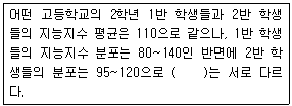
- 중앙치
- 최빈치
- 변산도
- 추정치
(정답률: 88%)
20. 다음 사례에 가장 적합한 연구방법은?
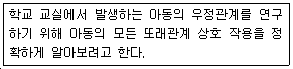
- 관찰법
- 실험법
- 설문조사법
- 상관연구법
(정답률: 80%)
2과목: 이상심리학
21. 항정신병 약물 부작용으로서 나타나는 혀, 얼굴, 입, 턱의 불수의적 움직임 증상은?
- 무동증(akinesia)
- 만발성 운동장애(tardive dyskinesia)
- 추체외로 증상(extrapyramidal symptoms)
- 구역질(nausea)
(정답률: 84%)
22. 다음의 특징을 보이는 장애는?
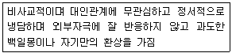
- 조현성 성격장애(schizoid personality disorder)
- 연극성 성격장애(histrionic personality disorder)
- 편집성 성격장애(paranoid personality disorder)
- 조현형 성격장애(schizotypal personality disorder)
(정답률: 65%)
23. 우울증의 원인이 되는 우울 유발적 귀인(depressogenic attribution)현상에 관한 설명으로 옳은 것은?
- 성공을 외부적, 안정적, 특수적 요인에 귀인한다.
- 성공을 내부적, 안정적, 특수적 요인에 귀인한다.
- 실패를 외부적, 안정적, 특수적 요인에 귀인한다.
- 실패를 내부적, 안정적, 전반적 요인에 귀인한다.
(정답률: 84%)
24. 순환성 장애의 특징이 아닌 것은?
- 청소년기나 초기 성인기에 시작된다.
- 남녀 간의 유병률에 큰 차이가 없다고 보고된다.
- 양극성 장애보다 경미한 증상이 2년 이상 지속된다.
- 양극성 장애로는 발전하지 않는다.
(정답률: 77%)
25. 이상행동 모델에 관한 설명으로 옳은 것은?
- 인지 모델: 잘못된 사고 과정의 결과이다.
- 행동주의 모델: 자기실현을 하는데 있어서 오는 어려움에서 생긴다.
- 인본주의 모델: 무의식적 내적 갈등의 상징적 표현이다.
- 사회문화 모델: 정상행동과 같이 학습의 결과로 습득된다.
(정답률: 81%)
26. 환각제에 해당되는 약물은?
- 펜시클리딘
- 대마
- 카페인
- 오피오이드
(정답률: 69%)
27. 강박장애의 특징을 모두 고른 것은?
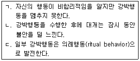
- ㄱ, ㄴ
- ㄱ, ㄷ
- ㄴ, ㄷ
- ㄱ, ㄴ, ㄷ
(정답률: 85%)
28. 정신장애 개입의 최근 동향으로 틀린 것은?
- 탈시설화(deinstitutionalization)의 감소
- 향정신성 약물의 발전
- 심리치료 서비스 이용의 증가
- 정신건강에 대한 예방적 접근의 강조
(정답률: 85%)
29. 대형 화재현장에서 살아남은 남성이 불이 나는 장면에 극심하게 불안증상을 느낄 때 의심할 수 있는 가능성이 가장 높은 장애는?
- 외상 후 스트레스 장애
- 적응장애
- 조현병
- 범불안장애
(정답률: 84%)
30. 적대적 반항장애(oppositional defiant disorder)의 진단기준에 해당되는 행동은?
- 자신도 모르게 일정한 몸짓을 하며 때로는 괴상한 소리를 내기도 한다.
- 엄마와 떨어지는 것에 대한 불안으로 학교가기를 거부한다.
- 사회적으로 정해진 규칙을 위반하거나 타인의 권리를 침해한다.
- 어른들과 논쟁을 하고 쉽게 화를 낸다.
(정답률: 74%)
31. 우울증과 관련하여 Beck이 제시한 인지삼제는?
- 자신, 세계 및 미래에 대한 비관적 견해
- 자신, 과거 및 환경에 대한 비관적 견해
- 자신, 과거 및 미래에 대한 비관적 견해
- 자신, 미래 및 관계에 대한 비관적 견해
(정답률: 77%)
32. 자폐스펙트럼 장애에 관한 설명으로 틀린 것은?
- 의사소통의 장해가 현저하고 지속적이다.
- 상상적인 놀이를 하는데 어려움이 있다.
- 사회적 관습을 이해하는데 어려움이 있다.
- 연령증가와 함께 증상의 호전을 보인다.
(정답률: 89%)
33. 알츠하이머병에 관한 설명으로 틀린 것은?
- 현저한 인지기능 장애가 특징이다.
- 도파민과 밀접한 관련이 있다.
- 연령의 증가와 함께 유병률이 높아진다.
- 점진적으로 진행하는 질병이다.
(정답률: 83%)
34. 조현성 성격장애와 조현형 성격장애의 공통점을 짝지은 것은?
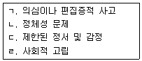
- ㄱ, ㄴ
- ㄴ, ㄷ
- ㄷ, ㄹ
- ㄴ, ㄹ
(정답률: 75%)
35. 다음 사례에 가장 적절한 진단명은?
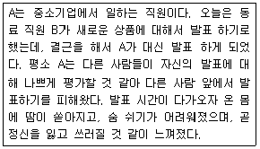
- 범불안장애
- 공황장애
- 강박장애
- 사회불안장애
(정답률: 78%)
36. DSM-5에서 제시한 폭식 삽화에 관한 설명으로 옳은 것은?
- 음식섭취에 대한 통제의 상실
- 주관적으로 많다고 느껴지는 음식섭취
- 3시간 이상 지속적 음식섭취
- 부적절한 보상행동(purging)의 사용
(정답률: 72%)
37. 다음에 해당하는 장애는?
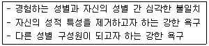
- 성도착증
- 동성애
- 성기능장애
- 성별불쾌감
(정답률: 83%)
38. DSM-5에서 파괴적, 충동조절 및 품행장애에 관한 설명으로 틀린 것은?
- 병적 도벽, 반사회성 성격장애 등의 하위유형이 있다、
- 자신이나 타인을 해하려는 충동, 욕구, 유혹에 저항하지 못한다.
- 충동적 행동을 하기 전까지 긴장감이나 각성상태가 고조된다.
- 충동적인 행동을 할 때마다 불쾌감이나 죄책감을 경험하게 된다.
(정답률: 81%)
39. 다음의 사례에 가장 적합한 진단명은?
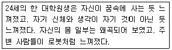
- 해리성 정체성 장애
- 해리성 둔주
- 이인화/비현실감 장애
- 착란장애
(정답률: 90%)
40. 치매에 관한 설명으로 가장 적합한 것은?
- 기억손실이 없다.
- 약물남용의 가능성이 많다.
- 증상은 오전에 가장 심해진다.
- 자신의 무능을 최소화하거나 자각하지 못한다.
(정답률: 80%)
3과목: 심리검사
41. 80세 이상의 노인집단용 규준이 마련되어 있는 심리검사는?
- K-WAIS
- K-WAIS-IV
- K-Vineland-II
- SMS(Social Maturity Scale)
(정답률: 82%)
42. MMPI에서 2, 7 척도가 상승한 패턴을 가진 피검자의 특성으로 옳지 않은 것은?
- 행동화(acting-out) 성향이 강하다.
- 정신치료에 대한 동기는 높은 편이다.
- 자기 비판 혹은 자기 처벌적인 성향이 강하다.
- 불안, 긴장, 과민성 등 정서적 불안 상태에 놓여 있다.
(정답률: 70%)
43. 신경심리검사에 관한 일반적인 설명으로 옳은 것은?
- 뇌손상은 단일한 행동지표를 나타낸다.
- 정상인과 노인의 기능평가에는 사용되지 않는다.
- 피검자의 인구통계학적 및 심리사회적 배경에 따라 반응이 달라진다.
- 신경심리평가에서는 전통적인 지적 기능평가와 성격평가는 필요하지 않다.
(정답률: 70%)
44. 다음 중 심리평가 과정에서 일반적으로 중요도가 상대적으로 가장 낮은 정보는?
- 면담
- 직업관
- 심리검사
- 행동관찰
(정답률: 87%)
45. MMPI에 관한 설명으로 틀린 것은?
- 수검자에 대한 행동평가가 가능하다.
- 수검자의 방어기제를 잘 알 수 있다.
- 결과에 대한 정신역동적 해석이 가능하다.
- 수검자의 성격 전반에 대한 이해가 가능하다.
(정답률: 52%)
46. 다음 환자는 뇌의 어떤 부위가 손상되었을 가능성이 높은가?
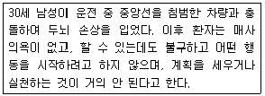
- 측두엽
- 후두엽
- 전두엽
- 두정엽
(정답률: 80%)
47. MMPI-2에서 타당성을 고려 할 때 ‘?’ 지표에 대한 설명으로 틀린 것은?
- 각 척도별 ‘?’ 반응의 비율을 확인해 보는 것은 유용할 수 있다.
- ‘?’ 반응이 300 번 이내의 문항에서만 발견되었다면 L, F, K 척도는 표준적인 해석이 가능하다.
- ‘?’ 반응이 3 개 미만인 경우에도 해당 문항에 대한 재반응을 요청하는 등의 사전검토 작업이 필요하다.
- ‘?’ 반응은 수검자가 질문에 대해 답변을 하지 않을 경우뿐만 아니라 ‘그렇다’와 ‘아니다’에 모두 응답했을 경우에도 해당된다.
(정답률: 64%)
48. 지능검사를 실시할 때 검사자의 태도로 바람직하지 않은 것은?
- 표준화된 실시 지침을 지켜야 한다.
- 검사의 실시 방법과 정답을 숙지하여야 한다.
- 피검자가 최대 능력을 발휘할 수 있는 분위기에서 실시한다.
- 객관적 해석을 위해서는 피검자의 배경정보를 고려하지 않는다.
(정답률: 87%)
49. 특정 학업과정이나 직업에 대한 앞으로의 수행능력이나 적응을 예측하는 검사는?
- 적성검사
- 지능검사
- 성격검사
- 능력검사
(정답률: 83%)
50. 좌반구 측두엽 부위의 손상을 당한 환자가 신경심리평가과제에서 보일 수 있는 특징이 아닌 것은?
- 명명과제(naming test)에서의 수행 저하
- 언어기억과제(verbal memory test)에서의 수행 저하
- 시-공간적 지남력의 저하
- 단어유창성과제(word fluency test)에서의 수행 저하
(정답률: 80%)
51. 측정영역이 서로 다른 검사로 짝지어진 것은?
- 주의력 검사 - 연속수행과제
- 코너스 평정척도 - 주의력 검사
- 연속수행과제 - 코너스 평정척도
- 낯선 상황 검사 - 코너스 평정척도
(정답률: 70%)
52. 웩슬러 지능검사의 소검사 중에서 일반 지능 또는 발병 전 지능을 추정하는데 사용되지 않는 소검사는?
- 상식
- 어휘
- 숫자
- 토막짜기
(정답률: 57%)
53. MMPI-2에서 89/98 상승척도 쌍을 보이는 사람들의 특징이 아닌 것은?
- 과잉활동적이고 정서적으로 불안정하다.
- 사회적인 기준이나 가치를 지나치게 무시하고, 자신의 이익을 위해 사람들을 이용하는 경향이 있다.
- 다른 사람들에게 다소 자기중심적이고 유아적인 기대를 한다.
- 성취 욕구가 강하고 성취에 대한 압박감을 느끼지만, 그들의 실제 수행은 기껏해야 평범한 수준인 경우가 많다.
(정답률: 52%)
54. 지능검사에 관한 설명으로 옳은 것은?
- 최초의 편차지능을 이용한 지능검사는 Spearman이 만들었다.
- 정신검사(mental test)란 용어를 심리학에 도입한 학자는 Binet이다.
- 지능검사는 피검사자의 정신병리를 파악하는데 사용할 수 있다.
- 현재 널리 사용되는 지능검사들은 대부분 문화적 영향이 적절히 배제되어 있다.
(정답률: 57%)
55. 16PF(성격요인검사)에 관한 설명으로 틀린 것은?
- 상반된 의미의 형용사를 요인분석하여 만든 검사이다.
- Cattell에 따르면 임상증상은 표면특성이고 그 배후에는 다양한 근원특성이 있다.
- MMPI와는 달리 정신질환자가 아닌 정상인의 성격을 측정하기 위해 만든 검사이다.
- Cattell과 Eber가 고안한 검사로 성인은 물론 학령기를 시작하는 6세 이상을 대상으로 하고 있다.
(정답률: 61%)
56. 지능은 우수하지만 주의력결핍과잉행동장애가 있어 학업부진을 보이는 아동이나 청소년들이 다른 소검사에 비해 높은 점수를 얻기 어려운 소검사는?
- 어휘
- 이해
- 숫자
- 토막짜기
(정답률: 71%)
57. 심리평가와 관련된 윤리로 보기 어려운 것은?
- 가능하면 최근에 제작된 검사를 사용해야 한다.
- 심리검사를 구매하는 데도 일정한 자격이 필요하다.
- 수검자 외의 어떠한 사람에게도 검사 결과를 알려서는 안 된다.
- 검사 결과는 수검자가 이해할 수 있는 방식으로 설명해야 한다.
(정답률: 69%)
58. Bayley 발달척도(BSID-II)를 구성하는 하위 척도가 아닌 것은?
- 운동척도(motor scale)
- 정신척도(mental scale)
- 사회성척도(social scale)
- 행동평정척도(behavior rating scale)
(정답률: 49%)
59. 검사 점수들의 분포 특성을 요약적으로 나타내는 지표로 사용되지 않는 것은?
- 사례수(N)
- 평균치(mean)
- 중앙치(median)
- 표준편차(standard deviation)
(정답률: 70%)
60. 동일한 사람에게 첫 번째 시행한 검사와 측정 영역, 문항 수, 난이도가 같은 검사로 두 번째 검사를 실시해서 두 검사점수 간의 상관으로 신뢰도를 추정하는 방법은?
- 반분 신뢰도
- 내적 합치도
- 동형검사 신뢰도
- 검사-재검사 신뢰도
(정답률: 59%)
4과목: 임상심리학
61. 범죄에 대한 지역사회심리학적 접근에서 일차적 예방에 해당하는 것은?
- 가해자의 부모에 대한 교육
- 범죄 피해자에 대한 조기지원 프로그램
- 범죄 예방을 위한 환경의 변화 노력
- 비행 청소년의 재비행 방지 프로그램
(정답률: 79%)
62. 행동적 평가 요소에 관한 설명으로 옳은 것은?
- 목적: 병인론적 요인을 확인하기 위해 강조된다.
- 과거력의 역할: 현재 상태가 과거의 산물이라 생각하기 때문에 중시된다.
- 행동의 역할: 특정한 상황에서 사람의 행동목록의 표본으로 중시된다.
- 도구의 구성: 상황적 특성보다는 초맥락적 일관성을 강조한다.
(정답률: 57%)
63. 개방형 질문 시행 시 일반적인 지침과 가장 거리가 먼 것은?
- 지적으로 심사숙고하여 반응하기 쉬운 ‘왜’로 시작하는 질문은 삼간다.
- 연관된 영역을 부연하여 회상할 수 있도록 질문한다.
- 정확하고 구체적인 사실여부 확인을 위한 질문을 한다.
- 너무 많은 질문을 하지 않는다.
(정답률: 64%)
64. 단기 심리치료에서 좋은 결과를 이끌어 내기 위한 요인으로 틀린 것은?
- 치료자의 온정과 공감
- 견고한 치료적 동맹 관계
- 문제에 대한 회피
- 내담자의 적절한 긍정적 기대
(정답률: 82%)
65. 미국심리학회(2002)에서 제시하고 있는 윤리강령의 일반원칙에 해당하지 않는 것은?
- 전문능력
- 성실성
- 타인의 복지에 대한 관심
- 치료자의 자기 인식능력
(정답률: 48%)
66. 다음은 행동치료의 어떤 기법에 해당하는가?
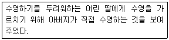
- 역조건화
- 혐오치료
- 모델링
- 체계적 둔감화
(정답률: 87%)
67. 바람직한 행동을 한 아동에게 그 아동이 평소 싫어하던 화장실 청소를 면제해 주었더니, 바람직한 행동이 증가했다면 이는 어떤 유형의 조작적 조건 형성에 해당하는가?
- 정적 강화
- 부적 강화
- 정적 처벌
- 부적 처벌
(정답률: 75%)
68. 치료장면에서의 효과적인 경청과 가장 거리가 먼 것은?
- 내담자가 자신의 문제를 심각하게 얘기하지만 치료자가 보기에는 그렇지 않을 때에는 중단시킨다.
- 치료자는 반응을 보이기에 앞서 내담자가 스스로 말할 시간을 충분히 주려고 한다.
- 치료자는 내담자에게 주의를 많이 기울인다.
- 내담자가 문제점을 피력할 때 가로막지 않는다.
(정답률: 83%)
69. Freud의 정신분석적 심리치료에 대한 비판을 토대로 발전한 신 정신분석학파의 주요 인물 및 치료접근법에 해당하지 않는 것은?
- Adler의 개인심리학
- Sullivan의 대인관계 이론
- Fairbaim의 대상관계 이론
- Glasser의 통제 이론
(정답률: 59%)
70. 임상심리학의 접근법 중 제2차 세계대전 이전에 대두된 치료 접근법은?
- 합리적 정서치료
- Adler의 개인심리학
- 교류분석
- 게슈탈트
(정답률: 62%)
71. 문장완성검사에 관한 설명으로 틀린 것은?
- 수검자의 자기개념, 가족관계 등을 파악할 수 있다.
- 수검자가 검사자극의 내용을 감지할 수 없도록 구성되어 있다.
- 수검자에 따라 각 문항의 모호함 정도는 달라질 수 있다.
- 개인과 집단 모두에게 실시될 수 있다.
(정답률: 71%)
72. Rogers의 인간중심 접근에 대한 설명으로 틀린 것은?
- 자기개념을 확장하도록 돕는 것이 치료의 목표 이다.
- 자기-경험의 불일치가 불안의 원인이라고 본다.
- 부모의 조건적 애정과 가치가 문제의 근원이 될 수 있다.
- 치료자는 때에 따라 자신의 감정을 숨기거나 왜곡해야 한다.
(정답률: 85%)
73. 임상심리학의 발전에 기여한 인물이나 사건과 그 설명이 바르게 짝지어진 것은?
- Alfred Binet - 편차형 아동지능검사를 개발하였다.
- Sigmund Freud - 무의식적 갈등과 정서적 영향이 정신질환과 신체적 질병의 원인이 될 수 있다고 가정하였다.
- Army Alpha - 문맹자와 언어장애자를 위한 비언어성 지능검사가 개발되었다.
- Wilhelm Wundt - Pennsylvania 대학교에 심리진료소를 개설하였다.
(정답률: 61%)
74. A유형(Type A) 성격의 행동패턴이 아닌 것은?
- 마감시한이 없을 때에도 최대의 능력을 발휘하여 일한다.
- 자신의 물리적, 사회적 환경을 장악하려는 통제감이 높다.
- 지연된 보상이 주어지는 과제에서 향상된 수행을 발휘한다.
- 좌절하면 공격적이고 적대적이 되며, 피로감과 신체적 증상을 덜 보고한다.
(정답률: 60%)
75. 환자에게 자신의 메시지를 정교화 하도록 도울 뿐만 아니라 면접자가 그 메시지를 이해하고 있다는 것을 확실히 하기 위하여 사용되는 의사소통 기법은?
- 요약
- 명료화
- 직면
- 부연설명
(정답률: 65%)
76. 불안을 유발하는 특정한 대상이나 상황이 불안하지 않은 상황으로 변화하도록 돕는 행동치료법은?
- 역조건형성
- 혐오치료
- 토큰 경제
- 인지치료
(정답률: 59%)
77. 지역사회 심리학에서 지향하는 바가 아닌 것은?
- 자원 봉사자 등 비전문 인력의 활용
- 정신 장애의 예방
- 정신 장애인의 사회 복귀
- 정신병원시설의 확장
(정답률: 77%)
78. Rorschach 검사의 실시에 관한 설명으로 옳은 것은?
- 수검자가 질문을 할 경우 검사자는 지시적으로 반응해야 한다.
- 일반적으로 수검자와 마주 보는 좌석배치가 표준적인 절차이다.
- 질문단계에서는 추가적인 반응을 확인하기 위해 주의를 기울여야 한다.
- 수검자가 카드 I 에서 5개를 넘겨 반응을 할 때는 중단시킨다.
(정답률: 44%)
79. 체중 감량을 위해 상담소를 찾은 여대생에게 치료자가 적용할 수 있는 가장 적합한 행동관찰법은?
- 자연관찰
- 면대면 관찰
- 자기관찰
- 통제된 관찰
(정답률: 80%)
80. 다음은 뇌와 관련하여 공통적으로 어떤 질환에 해당하는가?
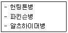
- 종양
- 뇌혈관 사고
- 퇴행성 질환
- 만성 알코올 남용
(정답률: 67%)
5과목: 심리상담
81. 청소년 비행의 원인을 사회학적 관점에서 설명 하는 이론이 아닌 것은?
- 아노미 이론
- 사회통제이론
- 욕구실현이론
- 하위문화이론
(정답률: 68%)
82. 상담심리학의 역사에서 상담심리학의 기반형성에 근원이 된 주요 영향이 아닌 것은?
- 의학적 관점으로부터의 상담과 심리치료의 발달
- Parsons의 업적과 직업운동의 성숙
- 정신건강에 대한 관심
- 심리측정적 경향의 발달과 개인차 연구
(정답률: 45%)
83. 전화상담의 특성에 대한 설명으로 틀린 것은?
- 전화상담은 일회성, 신속성, 비대면성의 특성을 지니기 때문에 상담에 대한 구조화를 배제해야 한다.
- 전화상담의 주된 주제에는 객관적 정보, 전문지식, 위로와 정서적 지지 제공, 다른 기관으로의 의뢰 등이 포함된다.
- 우리나라의 전화상담은 자살을 비롯한 위기 예방을 목적으로 시작되었으나 점차 위기 이외의 일반적 문제나 목적으로 확대되는 추세이다.
- 전화상담에서는 호소문제를 구체적으로 확인하고 상담목표를 정리하며 문제상황에 대한 새로운 대처방안 모색과 실행행동의 평가 등이 중요한 과제로 다루어져야 한다.
(정답률: 77%)
84. 학습문제 상담의 시간관리 전략에서 강조하는 것은?
- 기억하고자 하는 의도를 갖도록 노력한다.
- 학습의 목표를 중요도와 긴급도에 따라 구체적으로 수립한다.
- 시험이 끝난 후 오답을 점검한다.
- 처음부터 장시간 공부하기 보다는 조금씩 자주 하면서 체계적으로 학습한다.
(정답률: 69%)
85. 중독의 병인을 설명하는 모델에 대한 설명으로 틀린 것은?
- 도덕모형: 중독을 개인 선택의 결과로 간주한다.
- 학습모형: 혐오감을 주는 금단증상이 계속적인 약물사용의 한 원인이고 동기로 간주한다.
- 정신역동모형: 물질남용은 더욱 근본적인 정신병리의 징후로 간주한다.
- 고전적 조건형성 모형: 병적도박 등 행위중독의 주요 기제로 간주한다.
(정답률: 40%)
86. 집단상담 과정 중 집단원의 저항과 방어를 다루기 위해 지도자가 즉각 개입하고, 문제해결을 위해 지지와 도전을 제공하는 역할을 수행해야 하는 단계는?
- 갈등단계
- 응집성단계
- 생산적단계
- 종결단계
(정답률: 73%)
87. 상담자의 바람직한 상담기술과 가장 거리가 먼 것은?
- 내담자에 대한 상담자의 정서적인 반응을 반영하는 자기관련 진술을 적절히 시행한다.
- 내담자의 음성언어 및 신체언어에 대해 비판단적이고 진지하게 반응해야 한다.
- 치료적 직면은 돌봄의 과정 속에서 도전이 아닌 분명하게 하기 위한 목적으로 사용되어야 한다.
- 상담 초기에는 찬반을 내포하지 않는 최소의 촉진적 반응은 될 수 있는 대로 하지 않는다.
(정답률: 67%)
88. 심리상담에 관한 설명으로 옳은 것은?
- 내담자의 자각확장이 이루어지도록 조력하는 활동이다.
- 상담자의 가치관을 중심으로 성과가 산출되도록 해야 한다.
- 조력과정으로 결과를 강조하는 활동이어야 한다.
- 상담자의 전문적 훈련이 실제 상담과정과 무관하여야 한다.
(정답률: 77%)
89. 다음의 사례에서 사용된 현실치료 기법은?
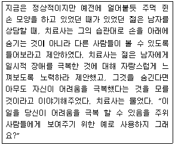
- 직면
- 재구성하기
- 역설적 처방
- 비유 사용하기
(정답률: 54%)
90. 자신조차 승인할 수 없는 욕구나 인격특성을 타인이나 사물로 전환시킴으로써 자신의 바람직하지 않은 욕구를 무의식적으로 감추려는 방어기제는?
- 동일화
- 합리화
- 투사
- 승화
(정답률: 80%)
91. 행동주의 집단상담의 절차를 바르게 나열한 것은?
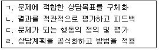
- ㄱ→ㄴ→ㄷ→ㄹ
- ㄴ→ㄷ→ㄱ→ㄹ
- ㄷ→ㄱ→ㄹ→ㄴ
- ㄹ→ㄱ→ㄷ→ㄴ
(정답률: 78%)
92. 특수한 진단을 피하고, 직업적 역할 속에서 자아(self)의 개념을 명백히 하고 실행할 수 있도록 돕는 직업상담의 이론은?
- 특성-요인 직업상담
- 정신역동적 직업상담
- 내담자중심 직업상담
- 행동주의 직업상담
(정답률: 61%)
93. 자살을 하거나 시도하는 학생들에게 공통적으로 나타나는 성격특성과 가장 거리가 먼 것은?
- 부정적 자아개념
- 부족한 의사소통 기술
- 과도한 신중성
- 부적절한 대처 기술
(정답률: 79%)
94. 성폭력 피해자에 대한 인지적 단기상담을 실시할 때 상담의 효과를 유지시키기 위한 방법으로 적합하지 않은 것은?
- 상담을 통한 체험을 일반화하도록 도와준다.
- 자기와의 대화내용을 검토하고 잘못된 자기대화를 고치도록 한다.
- 문제가 재발하지 않는다고 확신을 준다.
- 사회적인 지지를 해준다.
(정답률: 65%)
95. 우울한 사람들이 보이는 체계적인 사고의 오류 중 결론을 지지하는 증거가 없거나 증거가 결론과 배치되는데도 불구하고 어떤 결론을 이끌어 내는 과정을 의미하는 인지적 오류는?
- 임의적 추론(arbitrary inference)
- 과일반화(overgeneralization)
- 개인화(personalization)
- 선택적 추상화(selective abstraction)
(정답률: 79%)
96. 상담의 구조화에 관한 설명으로 틀린 것은?
- 상담의 다음 진행과정 에 대한 내담자의 두려움이나 궁금증을 줄일 수 있다.
- 구조화는 상담 초기뿐만 아니라 전체 과정에서 진행될 수 있다.
- 상담의 효과를 최대한으로 높이기 위해 행해진다.
- 상담에서 다루려는 내용을 구체적으로 정의하는 작업이다.
(정답률: 52%)
97. Adler의 개인심리학적 상담에 대한 설명으로 틀린 것은?
- Adler는 일반적으로 인간이 열등감을 갖는 것은 필요하고 바람직하기까지 하다고 보았다.
- Freud와 마찬가지로 Adler도 인간의 목표를 중시하면서 주관적 요인을 강조하였다.
- Adler는 신경증, 정신병, 범죄 등 모든 문제의 원인은 사회적 관심의 부재라고 보았다.
- Adler는 생활양식을 개인 및 사회의 정신병리를 일으키는 주요 요인으로 보았다.
(정답률: 63%)
98. 생애기술 상담이론에서 기술언어(skills language)에 해당하는 것은?
- 내담자가 어떻게 생각하고 느끼는가를 의미하는 것이다.
- 내담자가 어떤 외현적 행동을 하는가를 의미하는 것이다.
- 내담자 자신의 책임감 있는 삶을 의미하는 것이다.
- 내담자의 행동을 설명하고 분석하기 위해 사용하는 것을 의미하는 것이다.
(정답률: 65%)
99. 상담자의 윤리에 관한 설명으로 틀린 것은?
- 비밀보장은 상담진행 과정 중 가장 근본적인 윤리기준이다.
- 내담자의 윤리는 개인 상담뿐만 아니라 집단 상담이나 가족 상담에서도 고려되어야 한다.
- 상담여부를 결정하는 것은 내담자이며 상담자는 내담자에게 정확한 정보를 제공해야 한다.
- 상담이론과 기법은 반복적으로 검증된 것이므로 시대 및 사회여건과 무관하게 적용해야 한다.
(정답률: 76%)
100. 청소년 약물 남용에 대한 설명으로 틀린 것은?
- 우리나라 청소년의 흡연 비율은 아직 선진국보다 매우 낮은 편이다.
- 음주나 흡연을 하는 부모의 자녀는 음주나 흡연의 가능성이 높은 편이다.
- 또래 집단이 약물을 사용할 때, 같은 집단의 다른 청소년도 약물을 사용할 가능성이 있다.
- 흡연의 조기 시작은 본드나 마약 등의 약물 남용으로 발전될 가능성이 있다.
(정답률: 69%)